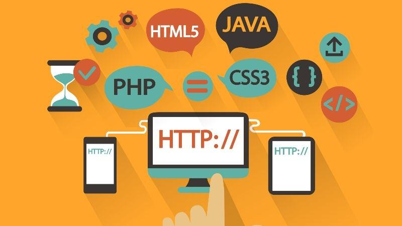

Người mới học lập trình nên bắt đầu từ đâu?
Những người mới bắt đầu thường có xu hướng tìm hiểu xem nên chọn học ngôn ngữ gì. Tuy nhiên, đó lại là cách làm ngược. Trước khi quyết định học một ngôn ngữ, bạn nên xác định mình muốn làm gì, muốn trở thành ai.
Lập trình Web
Bạn muốn trở thành người xây dựng nền tảng và giao diện của những website? Đây cũng chính là ngành nghề đang rất hot, được rất nhiều doanh nghiệp tuyển dụng. Khi mà, bất kì một công ty, doanh nghiệp nào muốn khẳng định tên tuổi, uy tín của mình, họ đều cần có một trang web chuẩn chỉnh. Bên cạnh đó, bạn còn có thể tạo dựng nên thương hiệu cá nhân của chính mình khi bạn có khả năng nắm trong tay mọi thứ về website. Nếu theo lập trình web, bạn có thể lựa chọn ngôn ngữ PHP để bắt đầu. Đây là ngôn ngữ lập trình web rất dễ để học.
Lập trình di động
Hiện nay, trên thế giới có 2 tỷ người dùng điện thoại thông minh. Và có gần 6 triệu ứng dụng trên di động, bao gồm: game, tiện ích, kinh doanh, sức khỏe. Bạn muốn gia nhập nền kinh tế di động đầy cơ hội và thử thách này? Hãy chọn học lập trình di động.
Chuyên gia Big Data
Thực tế, có nhiều tập dữ liệu cồng kềnh và phức tạp đến mức hệ thống xử lý dữ liệu truyền thống không đáp ứng được. Các chuyên gia Big Data sẽ lo phần việc này. Nói cách khác, đây là những người chuyên xử lý các phần dữ liệu lớn. Khi lượng dữ liệu lưu trữ ngày càng phát triển lên, nhu cầu nhân sự về các chuyên gia Big Data cũng tăng lên tỷ lệ thuận.
Kiểm thử phần mềm
Không phải tất cả các phần mềm làm ra đều được đưa vào sử dụng ngay. Chúng đều phải trải qua quá trình kiểm thử và đánh giá nhằm đảm bảo có thể chạy tốt và ổn định trong nhiều kịch bản và nền tảng khác nhau. Chạy thử và kiểm tra phần mềm là công việc của những chuyên viên kiểm thử phần mềm.
Chuyên viên ứng dụng, hệ thống thông tin
Nếu bạn đã có kiến thức chuyên môn ở một vài lĩnh vực khác, khi có thêm kiến thức về lập trình phần mềm và cơ sở dữ liệu, bạn có thể đảm nhận vai trò của một chuyên viên ứng dụng, hệ thống thông tin. Hầu hết các doanh nghiệp hiện giờ đều sử dụng đến các phần mềm quản lý như: kế toán, nhân sự, quản lý hệ thống CRM. Đây chính là cơ hội việc làm lớn dành cho các lập trình viên.